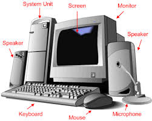
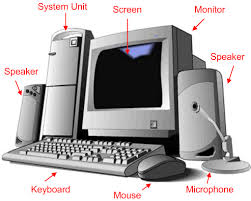
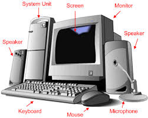

What is Computer |
|---|
A computer is an electronic device that manipulates information, or data. It has the ability to store, retrieve, and process data.It is an electronic device that accepts raw data as input and processes it with a set of instructions (a program) to produce the result as output.
It renders output just after performing mathematical and logical operations and can save the output for future use.
It can process numerical as well as non-numerical calculations. The term "computer" is derived from the Latin word "computare" which means to calculate.
| S.No | Operation | Description |
|---|---|---|
| 1 | Take Input | The process of entering data and instructions into the computer system. |
| 2 | Store Data | Saving data and instructions so that they are available for processing as and when required. |
| 3 | Processing Data | Performing arithmetic, and logical operations on data in order to convert them into useful information. |
| 4 | Output Informatio | The process of producing useful information or results for the user, such as a printed report or visual display. |
| 5 | Control the workflow | Directs the manner and sequence in which all of the above operations are performed. |
